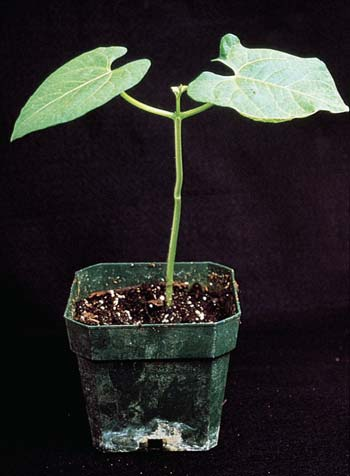

38 Respuestas de desarrollo en plantas a señales externas e internas
803
CONCEPTOS CLAVE
38.1 Una planta puede responder a un estímulo externo, como la luz, la gravedad o el tacto, por medio de una respuesta de crecimiento direccional o tropismo. El estudio de los tropismos ha sido de utilidad para que los biólogos aclaren los nexos entre el entorno exterior y señales internas como las hormonas. 38.2 Las hormonas son señales químicas responsables de coordinar y regular muchos aspectos del crecimiento de la planta. Aunque hay muchas hormonas vegetales, seis de ellas han sido bien caracterizadas: las auxinas, las giberelinas, las citoquininas, el etileno, el ácido abscísico y los brasinosteroides. 38.3 Las plantas poseen diversos receptores que detectan varios colores de luz. El fi tocromo detecta luz roja y luz roja lejana, que afectan varios aspectos del desarrollo, incluyendo el tiempo de fl oración. 38.4 La exposición de una planta a un herbívoro o patógeno provoca una respuesta hipersensible localizada que sella la zona afectada. La planta también envía señales desde el sitio de la infección localizada, lo cual lleva a resistencia sistémica adquirida: defensas mejoradas de larga duración en toda la planta.
E
l último control de crecimiento y desarrollo de una planta, que incluye todos los cambios que ocurren durante la vida completa de un individuo, es de origen genético. Si no están presentes los genes necesarios para el desarrollo de un rasgo particular, como la forma de una hoja, el color de una fl or o el tipo de sistema radicular, esa característica no se desarrolla. Cuando un gen particular está presente, su expresión; es decir, la manera en que se exhibe a sí mismo como una característica observable de un organismo, está determinada por varios factores, incluyendo señales de otros genes y del medio ambiente. La localización de una célula en el cuerpo de la planta joven también tiene un profundo efecto sobre la expresión génica durante el desarrollo. Señales químicas de células adyacentes ayudan a una célula a “percibir” su ubicación dentro del cuerpo de la planta. El entorno espacial de cada célula le ayuda a determinar en qué se convertirá en última instancia. El crecimiento y el desarrollo, incluyendo las respuestas de una planta a diversos cambios en su entorno, son controlados por hormonas vegetales, moléculas orgánicas que están presentes en muy bajas concentraciones en los tejidos vegetales y que actúan como señales químicas entre las células. Indicios del medio ambiente, como el cambio en la duración del día y variaciones en la precipitación y la temperatura, ejercen una infl uencia importante en la expresión génica y la producción de hormonas, como lo hacen sobre todos los aspectos del crecimiento y desarrollo de las plantas. Por ejemplo, el inicio de la reproducción sexual a menudo ocurre por control ambiental, en particular a latitudes templadas, y las plantas cam-
Margarita gloriosa ( Rudbeckia hirta ). Esta planta produce fl ores en respuesta a las noches más cortas de primavera y principios del verano.
© Scamp/Dreamstime

804 Capítulo 38
bian de crecimiento vegetativo a crecimiento reproductivo después de recibir las señales idóneas del medio ambiente. Muchas plantas con fl ores son sensibles a cambios en las cantidades relativas de luz diurna y oscuridad que acompañan a los cambios de estación, y las plantas fl orecen en respuesta a dichos cambios (vea la fotografía). En este capítulo se verá que las plantas utilizan la luz como una señal externa para ayudar a regular muchos aspectos del crecimiento y desarrollo, como tropismos (crecimiento direccional), tiempo de fl oración, el síndrome de evitación de la sombra y los ritmos circadianos. Otras plantas tienen requerimientos de temperatura que inducen la reproducción sexual. Así, las plantas perciben de manera continua información del medio ambiente y la usan para ayudar a regular el crecimiento y el desarrollo normales. En este capítulo se consideran estos diversos aspectos de crecimiento y desarrollo.
38.1 TROPISMOS
OBJETIVO DE APRENDIZAJE
1 Describir el fototropismo, el gravitropismo y el tigmotropismo.
Las plantas presentan movimientos en respuesta a estímulos del medio ambiente como la luz, la gravedad y el tacto. Una planta puede responder a estos estímulos direccionales por medio de crecimiento direccional; es decir, la dirección de crecimiento depende de la dirección del estímulo. Esta respuesta de crecimiento direccional, denominada tropismo , resulta en un cambio en la posición de una parte de la planta. Los tropismos son irreversibles y pueden ser positivos o negativos, dependiendo de si la planta crece hacia el estímulo (tropismo positivo) o se aleja de éste (tropismo negativo). Los tropismos están controlados por hormonas, lo cual se analizará después en el capítulo. El fototropismo es el crecimiento direccional de una planta ocasionado por la luz ( FIGURA 38-1 ). La mayoría de las puntas de los brotes en crecimiento presentan fototropismo positivo al fl exionarse o doblarse (al crecer) hacia la luz, algo que quizá usted ya ha observado si ha colocado plantas caseras cerca de una ventana soleada. Esta respuesta de crecimiento aumenta la probabilidad de que los tallos y las hojas reciban luz adecuada para la fotosíntesis. La respuesta de fl exión del fototropismo es activada
por luz azul con longitudes de onda menores a 500 nm. (Recuerde del capítulo 34 que la luz azul también induce la apertura de los estomas). Para que una planta o cualquier organismo presente una respuesta biológica a la luz, debe contener una sustancia sensible a ella, denominada fotorreceptor , para absorber la luz. El fotorreceptor que absorbe la luz azul y desencadena la respuesta fototrópica y otras respuestas a la misma luz (como la apertura de los estomas) es una familia de pigmentos amarillos denominados fototropinas . Las fototropinas son quinasas activadas por la luz, enzimas que transfi eren grupos fosfato. Hay evidencia de que las fototropinas se fosforilan; es decir, incorporan un grupo fosfato, en respuesta a la luz azul. Así, la fosforilación es una primera etapa en la vía de señalización de la luz azul. El crecimiento en respuesta a la dirección de la gravedad se denomina gravitropismo . La mayoría de las puntas de los tallos muestran gravitropismo negativo al alejarse del centro de la Tierra, mientras la mayoría de las puntas de las raíces presentan gravitropismo positivo ( FIGURA
38-2 ). La cofi a es el sitio de la percepción de la gravedad en las raíces; cuando se quita la cofi a, la raíz continúa creciendo, aunque pierde toda
© Martin Shields/Alamy
FIGURA 38-1 Fototropismo Una plántula de frijol ( Phaseolus vulgaris ) crece en la dirección de la luz y por tanto exhibe fototropismo positivo. La fl exión es causada por una mayor elongación en el lado sombreado del tallo que en el lado iluminado.
FIGURA 38-2 Animada Gravitropismo (a) Una plántula de maíz ( Zea mays ) se colocó en posición horizontal tres días después de haber germinado. En 1 hora, la raíz y las puntas de los brotes se habían curvado. (b) En 24 horas ( plántula a la derecha ), el crecimiento de la nueva raíz fue hacia abajo (gravitropismo positivo) y el crecimiento del nuevo brote fue hacia arriba (gravitropismo negativo). A la izquierda se muestra una plántula de control que germinó al mismo tiempo.
El tercer día, la plántula se colocó en posición horizontal Una hora después
Cengage
Respuestas de desarrollo en plantas a señales externas e internas 805
cimiento y el desarrollo. El estudio de las hormonas vegetales constituye un desafío porque son efi caces en concentraciones extremadamente pequeñas (menos de 10 − 6 mol/L). Además, los efectos de diferentes hormonas vegetales se superponen y es difícil determinar cuál hormona, en caso de haber alguna, es la causa principal de una respuesta particular. Las hormonas vegetales también pueden estimular una respuesta a una concentración e inhibir esa misma respuesta a concentraciones diferentes. Durante muchos años, los biólogos estudiaron cinco clases fundamentales de hormonas vegetales: auxinas, giberelinas, citoquininas, etileno y ácido abscísico. Recientemente, los investigadores han descubierto evidencia convincente de que los brasinosteroides constituyen una sexta hormona vegetal. Es probable que en el futuro sean caracterizadas otras hormonas vegetales. (En la TABLA 38-1 se resumen las seis hormonas vegetales).
Las hormonas vegetales actúan por transducción de señales
Los investigadores han usado técnicas de genética molecular para comprender mejor la biología de las hormonas vegetales. Las plantas mutantes del género Arabidopsis han sido particularmente útiles en estas investigaciones. Por ejemplo, mutantes diferentes tienen defectos en síntesis y transporte de hormonas, y recepción o transducción de señales ( FIGURA 38-3 ). En la transducción de señales , un receptor convierte una señal extracelular en una señal intracelular que origina una o más respuestas celulares. Tales mutantes permiten que los biólogos vegetales identifi quen y clonen genes implicados en estos aspectos de la biología hormonal. El estudio de los fenotipos mutantes ayuda a que los biólogos vegetales establezcan conexiones entre los genes mutantes y las actividades fi siológicas específi cas presentes en el crecimiento y desarrollo. Al usar esta investigación, los biólogos están aclarando los mecanismos generales de la acción de las hormonas vegetales, una meta importante de la biología de sistemas. Parece que muchas hormonas vegetales se unen a receptores asociados a enzimas ; la hormona se une al receptor, donde desencadena una reacción enzimática de algún tipo. Considere un ejemplo específi co que implica a la hormona vegetal auxina , la que se sabe es causante de cambios rápidos en expresiones génicas. Un receptor de la auxina se localiza en el citosol o en el núcleo, y tiene una forma tridimensional que se une con la molécula auxina. La unión de la auxina con su receptor (denominado receptor TIR1 ) cataliza la unión de la molécula ubiquitina
capacidad para percibir la gravedad. Células especiales en la cofi a poseen amiloplastos que se acumulan en la parte inferior de las células en respuesta a la gravedad y pueden iniciar por lo menos algo de la respuesta gravitrópica. Si la raíz se coloca en una situación diferente, como cuando una planta en maceta se coloca en posición horizontal, los amiloplastos asumen otra posición, siempre señalando en la dirección de la gravedad. La respuesta gravitrópica (fl exión) ocurre poco después a partir de entonces e implica a la hormona auxina (que se analizará después en el capítulo). A pesar del movimiento de los amiloplastos en respuesta a la gravedad, los investigadores cuestionan su papel en el gravitropismo. Una planta mutante de la especie Arabidopsis thaliana que carece de amiloplastos en las células de la cofi a sigue respondiendo en forma gravitrópica cuando se le coloca en posición horizontal, lo cual indica que las raíces no necesariamente requieren de amiloplastos para responder a la gravedad. Investigaciones en curso podrían aclarar la forma en que las raíces perciben la gravedad. El tigmotropismo es crecimiento en respuesta a un estímulo mecánico, como el contacto con un objeto. El crecimiento por entrelazamiento o rizado de los zarcillos o tallos, que ayuda a unir una planta trepadora como la vid a algún tipo de soporte, es un ejemplo de tigmotropismo (vea la fi gura 34-14b).
Repaso
■ ¿Qué es el fototropismo? ¿De qué manera la luz azul acciona la respuesta fototrópica?
■ ¿Cuál es la diferencia entre fototropismo y gravitropismo?
38.2 HORMONAS VEGETALES Y DESARROLLO
OBJETIVOS DE APRENDIZAJE
2 Describir un mecanismo de acción general para las hormonas vegetales, usando la auxina como ejemplo. 3 Describir experimentos tempranos con auxina que implican fototropismo. 4 Enumerar varias formas en que cada una de estas hormonas afecta el crecimiento y el desarrollo de las plantas: auxinas, giberelinas, citoquininas, etileno, ácido abscísico y brasinosteroides.
Una hormona vegetal es un compuesto orgánico que actúa como una señal química que provoca una variedad de respuestas que regulan el cre-
Hormonas vegetales
Hormona Sitio de producción Acciones principales
Auxinas (por ejemplo, AIA) Meristemo apical de los brotes, hojas jóvenes, semillas Elongación del tallo, dominancia apical, iniciación de la raíz, desarrollo de frutos
Giberelinas Hojas jóvenes y meristemos apicales Germinación de la semilla, elongación del tallo, fl oración, desarrollo (por ejemplo, GA 3 ) de los brotes, embrión en la semilla de frutos
Citoquininas Varios sitios en las plantas División celular, retraso de la senescencia de la hoja, inhibición de (por ejemplo, zeatina) dominancia apical, desarrollo de fl ores, desarrollo del embrión, germinación de la semilla
Etileno Nodos del tallo, fruto en maduración, Maduración de frutos, respuestas a factores ambientales de estrés, tejido dañado o envejecido mantenimiento de gancho apical en plántulas, iniciación de la raíz, senescencia y abscisión en hojas y fl ores
Ácido abscísico Casi todas las células que contienen plástidos Latencia en semillas, respuestas a estrés hídrico (hojas, tallos, raíces)
Brasinosteroides Brotes (hojas y capullos de fl ores), semillas, frutos Expresión génica mediada por la luz, división celular, elongación celular, (por ejemplo, brasinolida) germinación de la semilla, desarrollo vascular
TABLA 38-1
806 Capítulo 38
puesta de la auxina, resultando en cambios en el crecimiento y desarrollo de la célula. La identifi cación del receptor TIR1 para las auxinas fue reportada en 2005 por dos grupos que trabajaban de manera independiente. Este receptor es una proteína con caja F . La caja F es una breve secuencia de aminoácidos presentes en moléculas que catalizan la adición de etique-
con proteínas represoras que inhiben la transcripción de ciertos genes, denominados genes de respuesta a la auxina ( FIGURA 38-4 ). En consecuencia, la proteína represora ubiquitinizada está destinada a su degradación en fragmentos peptídicos en un proteasoma . (Vea la fi gura 14-15, que muestra la degradación ubiquitina-proteasoma de las proteínas). Como resultado, ocurre la transcripción del gen de res-
Respuestas específicas de desarrollo
Recepción, transducción de señales y respuesta
Transporte direccional (polar) de la auxina Gradiente local de auxina
Síntesis de la auxina
Señales externas (del medio ambiente)
Señales internas
FIGURA 38-3 Mecanismo general de acción de la hormona auxina Varias señales externas, internas o ambas activan la síntesis de la auxina. Una vez sintetizada, la auxina es transportada de manera direccional, provocando la formación de gradientes locales de auxina en la planta. A su vez, estos gradientes accionan respuestas específi cas de desarrollo en ciertas células por recepción, transducción de señales y respuesta (lo cual se abordará en breve). Se han identifi cado Arabidopsis mutantes con defectos que implican síntesis de la auxina, transporte de la auxina u otros pasos en el proceso.
Receptor de auxina (TIR1)
Complejo enzimático
Proteína represora (inhibe la transcripción)
Activador de la transcripción
Elemento de respuesta de la auxina
No hay transcripción
Gen de respuesta a la auxina
- Auxina ausente. Una proteína represora se une a un activador de transcripción, inhibiendo la transcripción del gen de respuesta de la auxina.
Auxina
Complejo enzimático
Proteasoma
Fragmentos peptídicos
Activador de la transcripción
Proteína ubiquitinizada
Moléculas de ubiquitina
Ocurre la transcripción Gen de respuesta a la auxina
- Auxina presente. La auxina se une al receptor TIR1, que es parte de un complejo enzimático que une la ubiquitina con la proteína represora. Luego, la proteína represora ubiquitinizada es degradada en fragmentos peptídicos en un proteasoma. Una vez que la proteína represora ya no está unida con el activador de la transcripción, ocurre la transcripción del gen de respuesta de la auxina.
ADN
ADN
FIGURA 38-4 Modelo de una vía de transducción de señales para la auxina


Respuestas de desarrollo en plantas a señales externas e internas 807
debía ocurrir la curvatura se protegía de la luz, el coleóptilo se fl exionaba hacia la luz. A partir de estos experimentos, los Darwin concluyeron que “alguna infl uencia es transmitida desde la parte superior hacia la parte inferior, provocando la fl exión”. En la década de 1920, Frits Went, un joven científi co holandés, aisló la hormona fototrópica de coleóptilos de avena. Retiró las puntas de los coleóptilos y las colocó en bloques delgados de agar por algún tiempo. Cuando colocó uno de estos bloques de agar en ángulo recto sobre un coleóptilo decapitado, se reanudó el crecimiento normal. Cuando colocó uno de estos bloques de agar a un lado de la punta de un coleóptilo decapitado en la oscuridad, ocurrió la fl exión ( FIGURA 38-6 ). Los resultados indicaron que la sustancia se había difundido desde la punta del coleóptilo hacia el agar y, después, del agar hacia el coleóptilo decapitado. Went denominó auxina (del griego aux , “agrandar” o “aumentar”) a esta sustancia. La auxina es un grupo de varias hormonas vegetales naturales (y artifi ciales); la auxina más común y fi siológicamente importante es el ácido indoleacético (AIA) . La purifi cación y elucidación de la estructura química de la auxina primaria fueron logradas a mediados de la década de 1930 por un equipo de investigación dirigido por Kenneth Th imann en el Instituto Tecnológico de California. Se dice que el movimiento de la auxina en la planta es polar o unidireccional. La auxina se mueve hacia abajo a lo largo del eje raíz-brote desde su sitio de producción, que suele ser el meristemo apical del brote. (Las hojas y semillas jóvenes son también sitios de producción de auxina). Este transporte direccional de célula a célula resulta en un gradiente de auxina (una diferencia espacial en la concentración de auxina) que activa respuestas específi cas. Proteínas especiales de transporte de auxina en las membranas plasmáticas de las células vegetales controlan el movimiento de la auxina fuera de las células; este proceso es responsable del movimiento direccional de la auxina. Mutaciones en las proteínas de transporte de auxina
tas de ubiquitina a proteínas destinadas a su destrucción. De manera interesante, todos los animales, las plantas y los hongos examinados hasta la fecha usan ubiquitina para destinar las proteínas a su destrucción, pero las bacterias no lo hacen. Esto sugiere que el uso de etiquetas de ubiquitina creció pronto en la evolución eucariota y fue conservado a medida que los diversos grupos eucariotas se diversifi caban. Las plantas cuentan con alrededor de 700 proteínas con caja F. Aunque no se sabe mucho respecto a la mayoría de éstas, es importante que los investigadores han identifi cado otras hormonas vegetales y moléculas de señalización que usan proteínas con caja F como receptores. Éstas incluyen giberelinas, etileno y ácido abscísico.
Las auxinas promueven la elongación celular
Charles Darwin, el naturalista inglés mejor conocido por desarrollar la teoría de la selección natural para explicar la evolución, también aportó la primera evidencia de la existencia de las auxinas. Los experimentos que Charles y su hijo Francis efectuaron en la década de 1870 implicaron fototropismo positivo, el crecimiento direccional de las plantas hacia la luz. Las plantas que utilizaron fueron plántulas recién germinadas de alpiste. Como ocurre con todas las hierbas, la primera parte de una plántula de alpiste que emerge del suelo es el coleóptilo, una funda protectora que rodea al tallo. Cuando los coleóptilos son expuestos a luz proveniente de una sola dirección, se fl exionan hacia la luz. La fl exión ocurre abajo de la punta del coleóptilo. Los Darwin intentaron infl uir en esta fl exión de varias maneras ( FI-
GURA 38-5 ). Por ejemplo, cubrieron la punta del coleóptilo en cuanto surgía del suelo. Cuando cubrieron esa parte del coleóptilo por arriba del sitio donde era de esperar que ocurriese la fl exión, las plantas no se fl exionaron. En otras plantas retiraron la punta del coleóptilo y encontraron que no ocurría fl exión. Cuando la parte inferior del coleóptilo donde
EXPERIMENTO CLAVE
PREGUNTA : ¿Qué parte del coleóptilo de hierba depende de la luz para el crecimiento fototrópico?
HIPÓTESIS: La punta del coleóptilo es necesaria para el crecimiento (fl exión) del eje del coleóptilo que acompaña la exposición a luz proveniente de una dirección.
EXPERIMENTO: Algunos coleóptilos de alpiste estaban descubiertos, algunos estaban cubiertos sólo en la punta, algunos no tenían punta y algunos estaban cubiertos en todas partes excepto en la punta ( izquierda ). Las cubiertas eran impermeables a la luz.
Rayos de luz
RESULTADOS Y CONCLUSIÓN: Después de ser expuestas a luz proveniente de una dirección, las plantas sin cubiertas y las plantas con las puntas descubiertas crecieron hacia la luz ( derecha ). Las plantas con las puntas cubiertas o que no tenían puntas no se fl exionaron hacia la luz. Los Darwin concluyeron que se había producido alguna sustancia en la punta y se había transmitido hacia la parte inferior, provocando la fl exión.
Fuentes: Darwin, C. R. The Power of Movement in Plants . John Murray, Londres, 1880; Boysen-Jensen, P. “Concerning the performance of phototropic stimuli on the Avena coleoptile”. Berichte der Deutschen Botanischen Gesellschaft (Reportes de la Sociedad Botánica Alemana), vol. 31, pp. 559-566, 1913.
FIGURA 38-5 Los experimentos de fototropismo realizados por los Darwin
808 Capítulo 38
apical. En plantas con fuerte dominancia apical, la auxina producida en el meristemo apical inhibe en las cercanías el desarrollo de yemas axilares en brotes que crezcan de manera activa. Cuando se quita el meristemo apical, la fuente de auxina se retira y las yemas axilares crecen para formar ramas. Sin embargo, la dominancia apical a menudo se restablece con rapidez a medida que una rama comienza a inhibir el crecimiento de otras. Otras hormonas (etileno y citoquinina, que se analizarán después) también están implicadas en la dominancia apical. Así como ocurre con muchas actividades fi siológicas, las tasas de cambio de estas hormonas pueden ser el factor responsable de la dominancia apical. La auxina producida por semillas en desarrollo estimula el desarrollo de los frutos. Cuando la auxina se aplica a ciertas fl ores en las que no ha ocurrido la fertilización (y, por tanto, donde las semillas no se están desarrollando), el ovario se agranda y se desarrolla en un fruto sin semillas. Así es como se producen los tomates sin semilla. 1 Sin embargo, la auxina no es la única hormona implicada en el desarrollo de los frutos. Algunas auxinas manufacturadas, o sintéticas, poseen estructuras semejantes a la del AIA. La auxina sintética ácido acético naft aleno estimula el desarrollo de la raíz en tallos recortados y se utiliza para la propagación asexual, en particular de plantas leñosas con importancia hortícola ( FI-
GURA 38-8 ). Las auxinas sintéticas 2,4-D y 2,4,5-T han sido usadas como herbicidas selectivos. Estos compuestos matan plantas con ramas anchas pero, por razones que no se comprenden por completo, no matan hierbas.
inhiben la transmisión de la hormona, que suele desplazarse aproximadamente a 1 cm por hora. La acción más característica de la auxina es la promoción de la elongación de la célula en tallos y coleóptilos. Este efecto, ejercido aparentemente por la acidifi cación de las paredes celulares, incrementa su plasticidad, permitiendo así su expansión por efecto de la fuerza de la presión de turgencia interna de la célula. El efecto de la auxina sobre la elongación de la célula también proporciona una explicación para el fototropismo. Cuando una planta se expone a luz que proviene de una sola dirección, algo de la auxina migra lateralmente hacia el lado sombreado del tallo antes de desplazarse hacia abajo por el tallo mediante transporte polar. Debido a la mayor concentración de auxina en el lado sombreado del tallo, las células se elongan ahí más que las células en al lado iluminado y el tallo se fl exiona hacia la luz ( FIGURA 38-7 ). La auxina también participa en el gravitropismo y en el tigmotropismo. La auxina tiene otros efectos en las plantas. Por ejemplo, algunas plantas tienden a ramifi carse muy poco cuando crecen. El crecimiento en estas plantas ocurre casi exclusivamente por el meristemo apical, más que por las yemas axilares, que no se desarrollan sino hasta que está presente la yema terminal. Se dice que tales plantas exhiben dominancia apical , la inhibición del crecimiento de la yema axilar por el meristemo
EXPERIMENTO CLAVE
PREGUNTA: ¿Hay alguna sustancia química responsable de la elongación de los coleóptilos y es posible aislarla?
HIPÓTESIS: El factor responsable del crecimiento del coleóptilo es un producto químico difusible que puede ser aislado de las puntas de coleóptilo.
EXPERIMENTO: Las puntas de coleóptilo se colocaron en bloques de agar durante un tiempo (a) . Los bloques de agar fueron transferidos a un coleóptilo decapitado. El bloque de agar fue colocado fuera del centro y el coleóptilo se dejó en la oscuridad (b) .
Punta de coleóptilo
Bloque de agar
RESULTADOS Y CONCLUSIÓN: El coleóptilo se fl exionó (c) , indicando que un producto químico se desplazó desde la punta original del coleóptilo hasta el bloque de agar y de ahí hasta el mismo lado del coleóptilo decapitado, provocando la elongación de ese lado.
Fuente: Went, F., “A growth substance and growth”. Recueils Travaux Botaniques Néerlandais (Colecciones de Trabajos Botánicos Holandeses), vol. 25, pp. 1-116, 1928.
FIGURA 38-6 Animada Aislamiento de la auxina de los coleóptilos
Lado iluminado del coleóptilo
Lado sombreado del coleóptilo
Rayos de luz
FIGURA 38-7 Animada Fototropismo y la distribución desigual de la auxina La auxina se desplaza hacia abajo a lo largo del tallo o coleóptilo alejándose de la luz, provocando que las células en el lado oscuro se elonguen. En consecuencia, el tallo o coleóptilo se fl exiona hacia la luz.
1 No todos los frutos sin semilla son producidos por tratamiento con auxina. En las uvas sin semilla Th ompson ocurren las fertilizaciones pero los embriones abortan y por tanto no se desarrollan las semillas. Las uvas sin semilla Th ompson son rociadas con la hormona giberelina para aumentar el tamaño de la baya.
Respuestas de desarrollo en plantas a señales externas e internas 809
elongación celular difi ere del provocado por la auxina. Recuerde que la elongación celular inducida por AIA implica la acidifi cación de la pared celular. En la elongación celular inducida por GA no ocurre la acidifi cación de la pared celular; los biólogos aún no conocen la manera en que las giberelinas modifi can las propiedades de la pared celular para ocasionar la elongación celular. Las giberelinas afectan varios procesos reproductivos en las plantas. Estimulan la fl oración, en particular de plantas de día largo (que se analizarán después en el capítulo). Además, las giberelinas sustituyen a la baja temperatura que requieren las bienales antes de empezar a fl orecer. Si a las bienales se les aplican giberelinas durante su primer año de crecimiento, la fl oración ocurre sin exposición a un período de baja temperatura. Las giberelinas, como la auxina, afectan el desarrollo de los frutos. Los agricultores aplican giberelinas a diversas variedades de uvas para producir frutos más grandes. Las giberelinas también están involucradas en la germinación de la semilla de ciertas plantas. En un experimento clásico que implica la germinación de semillas de cebada, los investigadores demostraron que la liberación de giberelina por el embrión activa la síntesis de α-amilasa, una enzima que digiere el almidón en el endospermo. Como resultado, la glucosa queda disponible para ser absorbida por el embrión. Aunque las enzimas movilizan las reservas de almidón en muchos tipos de semillas, el control mediante giberelina de las enzimas de semillas parece restringido a cereales y otras hierbas. Además de movilizar las reservas de alimentos en semillas de hierbas recién germinadas, la aplicación de giberelinas sustituye los requerimientos de baja temperatura o luz para la germinación de semillas de plantas como lechuga, avena y tabaco. Los científi cos están conduciendo de manera activa investigaciones en la señalización de la giberelina y han identifi cado diversos receptores de GA en el núcleo, proteínas represoras denominadas proteínas DELLA , así como una proteína con caja F. Cuando la giberelina no está vinculada al receptor, una proteína DELLA inhibe la transcripción de
Ambos herbicidas son semejantes en estructura al AIA y perturban los procesos de crecimiento normales de las plantas. Debido a que muchos de los cultivos más importantes del mundo son hierbas (como trigo, maíz y arroz), las auxinas 2,4-D y 2,4,5-T pueden matar plantas con ramas anchas que compiten con estos cultivos. Sin embargo, el uso de la auxina 2,4,5-T ya no está permitido en Estados Unidos debido a su asociación con las dioxinas, un grupo de compuestos cuya toxicidad varía de ligera a muy alta y que se forman como subproductos cuando se fabrica la auxina 2,4,5-T.
Las giberelinas promueven la elongación del tallo
En las décadas de 1920 y 1930, un biólogo japonés estudiaba una enfermedad del arroz en que las plántulas de arroz joven crecían excesivamente altas y delgadas, caían y morían. La causa de la enfermedad era un hongo ( Gibberella fujikuroi ) que produce una sustancia química denominada giberelina (GA) . No fue sino hasta después de la Segunda Guerra Mundial que los científi cos en Europa y Norteamérica se enteraron del trabajo realizado por los científi cos japoneses. Durante las décadas de 1950 y 1960, estudios en Estados Unidos y Gran Bretaña demostraron que las giberelinas son producidas por plantas saludables, así como por el hongo. Las giberelinas son hormonas que participan en muchas funciones normales de las plantas. Los síntomas de la enfermedad de las plántulas son ocasionados por una concentración anormalmente alta de GA en el tejido vegetal (debido a que tanto la planta como el hongo producen giberelina). En la actualidad se conocen docenas de giberelinas que existen de manera natural, aunque sólo alrededor de cuatro funcionan como hormonas vegetales; el resto son precursores inactivos. No hay giberelinas sintéticas. Las giberelinas promueven la elongación del tallo de muchas plantas. Cuando se aplica GA a una planta, en particular a ciertas variedades enanas, esta elongación puede ser espectacular. Algunas plantas de maíz y de guisantes que son enanas como resultado de una o más mutaciones crecen hasta una altura normal cuando son tratadas con GA. Variedades de trigo de tallo corto y alto rendimiento deben sus tallos cortos a una respuesta reducida a la GA. Estas variedades ponen menos de sus recursos en la altura del tallo y más en la producción de granos. Las giberelinas también están implicadas en el espigado , la rápida elongación de un tallo fl oral que ocurre de manera natural en muchas plantas cuando inician la fl oración ( FIGURA 38-9 ). Las giberelinas provocan la elongación del tallo al estimular la división y la elongación celular. Sin embargo, el verdadero mecanismo de
FIGURA 38-8 Auxinas y desarrollo de raíces en tallos recortados Muchas raíces adventicias se desarrollaron en un tallo recortado de madreselva ( Lonicera fragrantissima ) colocado en una solución con una alta concentración de auxina sintética ( izquierda ). Menos raíces se desarrollaron en una menor concentración de auxina ( en medio ). El tallo colocado en agua (sin auxina) sirvió como control y no formó raíces en el mismo período ( derecha ).
Joe Eakes, Color Advantage/Visuals Unlimited
FIGURA 38-9 La giberelina y la elongación del tallo Como muchas bienales, la manta india ( Gaillardia pulchella ) crece como una roseta, que es un racimo circular de hojas cerca del suelo, durante su primer año. A continuación, se espiga cuando inicia la fl oración en el segundo año. La planta en fl or crece hasta 0.6 m.
© Yuri Kravchenko/Shutterstock
810 Capítulo 38
getales. Sin embargo, en 1995, biólogos moleculares en la Universidad de Wisconsin combinaron un promotor de un gen activado durante senescencia normal con un gen que codifi ca una enzima implicada en la síntesis de la citoquinina. (Recuerde del capítulo 13 que el promotor es la secuencia de nucleótidos en el ADN a la cual la polimerasa ARN se adhiere para comenzar la transcripción). Las hojas de plantas de tabaco transgénicas que contenían este ADN recombinante producían más citoquinina y por tanto vivían más y continuaban realizando la fotosíntesis ( FIGURA 38-11 ). Esta tecnología molecular podría tener el potencial de incrementar la longevidad y la productividad de ciertos cultivos.
El etileno promueve la abscisión y la maduración del fruto
A principios del siglo xx, los científi cos observaron que el gas etileno (C 2 H 4 ) afectaba de varias formas el crecimiento de las plantas, aunque no fue sino hasta 1934 que demostraron que las plantas producen etileno. Esta hormona natural infl uencia muchos procesos de las plantas. El etileno inhibe la elongación celular, promueve la germinación de la semilla, promueve la dominancia apical y participa en respuestas de las plantas a las heridas o a la invasión de microorganismos que causan enfermedades. El etileno también desempeña un papel fundamental en muchos aspectos de la senescencia, incluyendo la maduración del fruto. A medida
los genes de respuesta GA. Cuando la GA está presente, se une al receptor, que acciona una enzima que adhiere ubiquitina a la proteína DELLA. Esta proteína está destinada a degradación en fragmentos peptídicos en un proteasoma. Una vez que la proteína DELLA no está presente, ocurre la transcripción del gen de respuesta de la GA. Este proceso de señalización puede parecer conocido: el proceso de transducción de señales GA comparte semejanzas con la vía de transducción de señales de auxina descrito antes en el capítulo.
Las citoquininas promueven la división celular
Durante las décadas de 1940 y 1950, los investigadores intentaban descubrir sustancias que pudiesen inducir la división celular en cultivo de tejido , una técnica en la cual las células se aíslan de las plantas y se hacen crecer en un medio nutriente. (El cultivo de tejidos vegetales se analiza en el capítulo 33). Descubrieron que las células no se dividen sin una sustancia que se encuentra en la leche de coco. Debido a que la leche de coco tiene una composición química complicada, durante algún tiempo los investigadores no identifi caron la naturaleza química de la sustancia inductora de la división. Finalmente, los investigadores aislaron una sustancia activa de una fuente diferente, ADN envejecido de esperma de arenque. La denominaron citoquinina o citocinina porque induce la citoquinesis o división citoplasmática (también llamada “citocinesis”). En 1963, los investigadores identifi caron la primera citoquinina vegetal, la zeatina, en el maíz. Desde entonces, se han identifi cado moléculas semejantes en otras plantas. Los biólogos también han sintetizado varias citoquininas. Las citoquininas son estructuralmente semejantes a la adenina, una base de purina que forma parte de las moléculas de ADN y ARN. Los biólogos están empezando a descubrir la vía de transducción de señales de la citoquinina, que es más complicada que las de la auxina y la giberelina. La vía de la citoquinina tiene pasos múltiples, cada uno controlado por un número de genes. La presencia de bucles y ligas de retroalimentación con otras vías de señalización agrega otro nivel de complejidad a la regulación de la actividad de la citoquinina. Las citoquininas promueven la división celular y la diferenciación de células jóvenes relativamente no especializadas en células maduras más especializadas en plantas intactas. Constituyen un ingrediente necesario en cualquier medio de cultivo de tejidos vegetales y deben estar presentes para que las células se dividan. En el cultivo de tejidos, las citoquininas interactúan con la auxina durante la formación de órganos de plantas como raíces y tallos ( FIGURA 38-10 ). Por ejemplo, en el cultivo de tejidos de tabaco una alta proporción de auxina a citoquinina induce la formación de raíces, mientras que una baja proporción de auxina a citoquinina induce la formación de brotes. Las citoquininas y la auxina también interactúan en el control de la dominancia apical. Aquí su relación es antagónica: la auxina inhibe el crecimiento de yemas axilares y la citoquinina promueve su crecimiento. Un efecto de las citoquininas en las células vegetales consiste en retrasar el proceso de envejecimiento. Las células vegetales, como todas las células vivas, pasan por un proceso de envejecimiento natural denominado senescencia . La senescencia se acelera en células de partes de la planta que se cortan, como los tallos de fl ores. Los botánicos creen que las plantas deben contar con un suministro continuo de citoquininas desde las raíces. Los tallos cortados pierden, por supuesto, su fuente de citoquininas y por ello envejecen con rapidez. Cuando se rocían citoquininas sobre las hojas del tallo cortado de muchas especies, permanecen verdes, mientras que las hojas sin rociar se vuelven amarillas y mueren. A pesar de su participación en la regulación de muchos aspectos del crecimiento y desarrollo de las plantas, en la actualidad las citoquininas tienen pocas aplicaciones comerciales distintas al cultivo de tejidos ve-
Concentración de auxina (mg/L)
Concentración de citoquinina (mg/L)
0
1.0
2.0
0
0.1
0.2
0.3
0.4
0.5
- Explante inicial (b) Callo (c) Raíces (d) Brotes
División celular sin diferenciación División celular con diferenciación
Auxina Citoquinina
FIGURA 38-10 Interacciones auxina-citoquinina en el cultivo de tejidos La variación de las cantidades de auxina y citoquinina en los medios de cultivo produce respuestas de crecimiento diferentes. (a) El explante inicial es una pieza pequeña de tejido estéril de la médula de un tallo de tabaco que se coloca sobre agar nutritivo. (b) Agar nutritivo que contiene 2.0 mg/L de auxina y 0.2 mg/L de citoquinina hace que las células se dividan y formen un grupo de tejido no diferenciado denominado callo. (c) Agar con 2.0 mg/L de auxina y 0.02 mg/L de citoquinina (alta proporción de auxina a citoquinina) estimula el crecimiento de la raíz. (d) Agar con 2.0 mg/L de auxina y 0.5 mg/L de citoquinina (baja proporción de auxina a citoquinina) estimula el crecimiento de los brotes.
Respuestas de desarrollo en plantas a señales externas e internas 811
lular para soportar células (colénquima y esclerénquima). Estos cambios son adaptativos porque tallos más cortos y gruesos tienen menos probabilidad de ser dañados por factores de estrés mecánicos. El etileno participa en la abscisión de la hoja, que en realidad es afectada por dos hormonas antagónicas: el etileno y la auxina. A medida que una hoja envejece (cuando se aproxima el otoño, para árboles caducos en climas templados), el nivel de auxina en la hoja disminuye. Al mismo tiempo, las células en la capa de abscisión en la base del pecíolo (donde la hoja se desprende del tallo) empiezan a producir etileno. Los investigadores que estudian la señalización de etileno han identifi cado un mecanismo semejante al que ya se ha descrito para la auxina y la giberelina. Cuando hay etileno presente, se une a un receptor. Esta unión activa una enzima que adhiere ubiquitina a una proteína destinada para degradarse en fragmentos peptídicos en un proteasoma. Por lo menos dos proteínas con caja F participan en la degradación de la proteína que ocurre en la transducción de señales de etileno.
El ácido abscísico promueve la latencia de semillas
En 1963, dos equipos de investigación diferentes descubrieron el ácido abscísico ( ABA por sus siglas en inglés). A pesar de su nombre, este ácido no induce la abscisión en la mayoría de las plantas. En vez de ello, el ABA participa en una respuesta de la planta al estrés y en la latencia de semillas, un estado temporal de actividad fi siológica detenida. Así como una hormona del estrés ambiental, el ABA promueve en particular cambios en tejidos vegetales que están estresados por défi cit hídrico. (Recuerde que el etileno también afecta las respuestas de las plantas a ciertos factores de estrés, como el estrés mecánico y las heridas). Los botánicos comprenden mejor el efecto del ácido abscísico en plantas que sufren estrés hídrico. El nivel de ABA aumenta de manera drástica en las hojas de plantas expuestas a condiciones de sequía severas. El alto nivel de ABA en las hojas activa un proceso de transducción de señales que conduce al cierre de los estomas, con lo cual la planta ahorra el agua que normalmente pierde por transpiración, aumentando así su probabilidad de supervivencia. A medida que aumenta el conocimiento de la señalización del ABA en células guardianas, los botánicos
que el fruto madura, produce etileno, que acciona una aceleración del proceso de maduración. Esto induce que el fruto produzca más etileno, que acelera aún más la maduración. El dicho “una manzana podrida echa a perder a las demás” es cierto. Una manzana podrida ha madurado demasiado y produce grandes cantidades de etileno, que se difunde y activa el proceso de maduración en manzanas próximas. Los humanos usan comercialmente el etileno para madurar de manera uniforme plátanos y tomates. Estos frutos se cosechan cuando están verdes y se embarcan a su destino, donde son expuestos a etileno antes de ser entregados en tiendas de comestibles ( FIGURA 38-12 ). Las plantas que crecen en un entorno natural encuentran lluvia, granizo, viento y contacto con animales que pasan. Todos estos factores mecánicos de estrés modifi can su crecimiento y desarrollo, haciéndolas más cortas y rechonchas que las plantas que crecen en un invernadero. El etileno regula tales respuestas de desarrollo a estímulos mecánicos, conocidos como tigmomorfogénesis . Las plantas que son perturbadas mecánicamente producen etileno adicional, que a su vez inhibe la elongación del tallo y mejora el espesor de la pared ce-
FIGURA 38-11 Síntesis de la citoquinina y retraso de la senescencia Las plantas de tabaco ( Nicotiana tabacum ) son modifi cadas genéticamente para producir citoquinina adicional a medida que envejecen. Dependiendo de la variedad, el tabaco alcanza de 0.9 a 3 m de alto.
© PROJEKTOGRAF/Shutterstock
FIGURA 38-12 Etileno y maduración del fruto Los tomates de ambas cajas fueron cosechados al mismo tiempo, mientras estaban verdes. Los tomates en la caja de la derecha fueron expuestos durante tres días a una atmósfera que contenía 100 ppm de etileno.
Illustration Services
812 Capítulo 38
mutantes que no pueden sintetizar BR son plantas enanas con pequeñas hojas rizadas y fertilidad reducida; los investigadores pueden invertir este defecto mediante la aplicación exógena de BR a la planta. Los estudios de estas mutantes sugieren que los brasinosteroides participan en múltiples procesos de desarrollo, como división y elongación celular, diferenciación inducida por la luz, desarrollo vascular y germinación de las semillas ( FIGURA 38-14 ). Se han caracterizado muchos pasos de las vías de señalización de los BR. Los BR se unen a un receptor quinasa en la membrana plasmática de la planta (a diferencia de las hormonas esteroides en los animales, que penetran en la célula y se unen a los receptores en el citoplasma o núcleo). Cuando el BR se une a su receptor, el receptor fosforila moléculas en el citosol, lo cual a su vez provoca una cascada de señalización que fi nalmente modifi ca la expresión del gen en la célula. Parte del proceso de transducción de señales implica fi jar ubiquitina a proteínas nucleares destinadas a degradación en un proteasoma. Como resultado, la expresión de genes objetivo BR se ajusta.
La identifi cación de una señal universal de promoción de fl ores sigue siendo difícil
Experimentos en los cuales especies diferentes de tabaco son injertadas en conjunto indican que pueden existir sustancias no identifi cadas promotoras e inhibidoras de fl ores. La Nicotiana silvestris es una planta de tabaco de día largo (requiere una noche corta para fl orecer); una varie-
esperan usar esta información para modifi car cultivos y plantas hortícolas que son resistentes a la sequía. La llegada del invierno también es un tipo de estrés sobre las plantas. Una adaptación invernal que implica ácido abscísico es la latencia en semillas. Muchas semillas poseen altos niveles de ABA en sus tejidos y no germinan sino hasta que el ABA se elimina. En un maíz mutante incapaz de sintetizar ABA, las semillas germinan en cuanto maduran los embriones, incluso mientras están sujetas a la mazorca ( FIGURA 38-13 ). El ácido abscísico no es la única hormona implicada en la latencia de semillas. Por ejemplo, la adición de giberelina invierte los efectos de latencia. En las semillas, el nivel de ABA disminuye durante el invierno y el nivel de GA aumenta. Las citoquininas también participan en el rompimiento de la latencia. De nuevo, se observa que una simple actividad fi siológica como la latencia en semillas puede ser controlada en las plantas mediante la interacción de varias hormonas. La verdadera respuesta de la planta puede ser resultado de proporciones cambiantes de hormonas, más que del efecto de cada hormona por separado.
Los brasinosteroides son hormonas esteroides vegetales
Aunque desde hace mucho se sabe que las hormonas esteroides desempeñan papeles cruciales en los animales, las funciones de las hormonas esteroides en vegetales no fueron bien caracterizadas sino hasta mediados de la década de 1990. Los brasinosteroides (BR) son un grupo de esteroides que funcionan como hormonas vegetales. Los BR participan en varios aspectos del crecimiento y desarrollo. Las Arabidopsis
Cortesía de M. G. Neuffer
FIGURA 38-13 La ausencia de ácido abscísico provoca germinación precoz En un maíz mutante ( Zea mays ) que no produce ácido abscísico, algunos granos han germinado mientras están en la mazorca, produciendo raíces ( fl echas ).
FIGURA 38-14 Brasinosteroides y germinación de semillas en Arabidopsis Los investigadores utilizaron una Arabidopsis mutante insensible a GA que producía semillas que no germinaban. (Recuerde que la GA promueve la germinación de semillas, de modo que se requiere una planta que no responde a GA endógena). Los científi cos superaron la incapacidad de las semillas mutantes para germinar al tratarlas con un brasinosteroide (BR). Observe cómo aumenta el porcentaje de germinación a medida que crece la concentración de BR a que fueron expuestas las semillas.
Fuente original: Steber, C. M. y P. McCourt, “A role for brassinosteroids in germination in Arabidopsis”. Plant Physiology , vol. 125, pp. 287-297, 2001.
Porcentaje de germinación
0
20
40
60
80
100
Concentración de BR
0.5 0 1.0 1.5 2.0 2.5
Respuestas de desarrollo en plantas a señales externas e internas 813
38.3 SEÑALES LUMINOSAS Y DESARROLLO DE LAS PLANTAS
OBJETIVOS DE APRENDIZAJE
5 Explicar cómo la variación de cantidades de luz y oscuridad induce la fl oración. 6 Describir el papel del fi tocromo en la fl oración, incluyendo un breve análisis de la transducción de señales del fi tocromo. 7 Defi nir ritmo circadiano y proporcionar un ejemplo. 8 Distinguir entre fi tocromo y criptocromo.
El fotoperiodismo es cualquier respuesta de una planta a las longitudes relativas de la luz diurna y la oscuridad. El inicio de la fl oración en el meristemo apical del tallo es una de varias actividades fi siológicas que son fotoperiódicas en muchas plantas. Las plantas se clasifi can en cuatro grupos principales: de día corto, de día largo, de día intermedio y de día neutro, con base en la manera en que el fotoperiodismo afecta su transición del crecimiento vegetativo a la fl oración. Las plantas de día corto (también denominadas plantas de noche larga ) fl orecen cuando la longitud de la noche es igual o mayor que algún período crítico ( FIGURA 38-16a ). Así, las plantas de día corto detectan el alargamiento de las noches a fi nes de verano o en otoño. Hay dos tipos de plantas de día corto: cualitativas y cuantitativas. En las plantas cualitativas de día corto , la fl oración ocurre sólo en días cortos; en las plantas cuantitativas de día corto , la fl oración es acelerada por los días cortos. El inicio de la fl oración en las plantas de día corto no se debe al período más corto de luz diurna sino al largo período ininterrumpido de oscuridad. La mínima longitud crítica de la noche varía considerablemente de una especie vegetal a otra, aunque para muchas se ubica entre 12 y 14 horas. Ejemplos de plantas de día corto son el crisantemo de fl orista, la bardana (cadillo) y la poinsett ia (fl or de nochebuena), que suelen fl orecer a fi nales del verano o en otoño. Las poinsett ias, por ejemplo, suelen exhibir yemas fl orales a principios de octubre en el hemisferio norte y fl orecen aproximadamente de 8 a 10 semanas después; de ahí su asociación tradicional con la Navidad. Las plantas de día largo (también denominadas plantas de noche corta ) fl orecen cuando la longitud de la noche es igual o menor que algún período crítico ( FIGURA 38-16b ). En las plantas cualitativas de día largo , la fl oración ocurre sólo en días largos; en las plantas cuantitativas de día largo , los días largos aceleran la fl oración. Las plantas de día largo, como la espinaca, la margarita gloriosa (vea la fotografía en la introducción del capítulo) y la planta modelo de investigación Arabidopsis , fl orecen cuando detectan el acortamiento de las noches de primavera y principio del verano. Las plantas de día intermedio no fl orecen cuando la longitud de la noche es demasiado larga o demasiado corta ( FIGURA 38-16c ). La caña de azúcar y el coleo son plantas de día intermedio. Estas plantas fl orecen cuando son expuestas a días y noches de longitud intermedia. Algunas plantas, denominadas plantas de día neutro , no inician la fl oración en respuesta a cambios estacionales en el período de luz diurna y oscuridad sino que responden a algún otro tipo de estímulo, externo o interno. El pepino, el girasol, el maíz y la cebolla son ejemplos de plantas de día neutro. Muchas de estas plantas se originaron en los trópicos, donde la longitud del día no varía en forma apreciable durante el año. En contraste, las plantas de día corto, de día largo y de día intermedio son templadas o subtropicales (especies de latitudes medias).
dad de N . tabacum es una planta de tabaco de día neutro (los cambios estacionales no afectan cuándo fl orece). Cuando una planta de tabaco de día largo se injerta a una planta de tabaco de día neutro y se expone a noches cortas, ambas plantas fl orecen ( FIGURA 38-15 ). La planta de tabaco de día neutro fl orece más pronto que lo normal. Los biólogos sostienen la hipótesis de que una sustancia promotora de fl ores, fl orígeno , puede ser inducida en la planta de día largo y transportada a la planta de día neutro a través de la unión del injerto, provocando que la planta de día neutro fl orezca antes de lo esperado. Una planta intacta puede producir fl orígeno en las hojas y transportarlo en el fl oema al meristemo apical del tallo. Allí, induce una transición del desarrollo vegetativo al reproductivo; es decir, a un meristemo que produce fl ores. Cuando un botánico injerta una planta de tabaco de día largo a una planta de tabaco de día neutro y las expone a noches largas, ninguna planta fl orece. En tanto continúen estas condiciones, las plantas de día neutro no fl orecen, inclusive cuando normalmente lo harían. En este caso, la planta de tabaco de día largo podría producir una sustancia inhibidora de fl ores que es transportada a la planta de tabaco de día neutro a través de la unión del injerto. Esta sustancia evita la fl oración de la planta de tabaco de día neutro.
Repaso
■ ¿De qué manera la recepción de señales, la transducción de señales y la actividad celular alterada forman parte del mecanismo general de acción para la auxina?
■ ¿Cuál es la participación de la auxina en el fototropismo?
■ ¿Cuáles hormonas están presentes en cada uno de los siguientes procesos fisiológicos: (1) germinación de semillas, (2) elongación del tallo, (3) maduración de frutos, (4) abscisión de la hoja y (5) latencia de semillas?
Ambas plantas florecen Planta de día neutro injertada en una planta de día largo
Injerto
Inducción de día largo (noche corta)
FIGURA 38-15 Evidencia de la existencia de una sustancia promotora de fl ores Cuando una planta de tabaco de día largo ( Nicotiana silvestris ) se injerta a una planta de tabaco de día neutro ( N. tabacum ) y las dos plantas se exponen a un régimen día largo-noche corta, ambas fl orecen. La planta de día neutro fl orece más pronto que lo normal, presumiblemente porque una sustancia promotora de fl ores pasa de la planta de día largo hacia la planta de día neutro a través del injerto
814 Capítulo 38
examinadas hasta la fecha. Por ejemplo, cinco miembros de la familia fi tocromo, identifi cados como phyA, phyB, phyC, phyD y phyE, están presentes en la Arabidopsis . El fi tocromo es también un fotorreceptor en ciertas bacterias, hongos y mohos del cieno. Mucho del conocimiento actual del fi tocromo en la Arabidopsis está basado en varias plantas mutantes que no expresan un gen específi co de fi tocromo, como el gen que codifi ca el phyA. Al estudiar la respuesta fi siológica de plantas que no producen un fi tocromo individual, los biólogos han concluido que las formas individuales de fi tocromo poseen funciones que son únicas y a la vez se superponen. Parece que el phyB ejerce su infl uencia en todas las etapas del ciclo de vida de la planta, mientras las otras formas de fi tocromo tienen funciones más reducidas en etapas específi cas en el ciclo de vida. El phyA y el phyB pueden presentar efectos antagónicos (opuestos) en la fl oración. En plantas de día largo, el phyB puede inhibir la fl oración y el phyA puede inducirla. La fl oración ocurre más rápido en plantas de día largo con mutaciones en el gen que codifi ca el phyB; estas mutaciones reducen o eliminan la producción de phyB. En contraste, la fl oración es retrasada o impedida en plantas de día largo con mutaciones en el gen que codifi ca el phyA. Cada miembro de la familia fi tocromo existe en dos formas y fácilmente se convierte de una forma en otra luego de absorber luz de longitudes de onda específi cas. Una forma, denominada Pr (del inglés r ed-absorbing p hytochrome ), absorbe de manera vigorosa luz con longitud de onda roja relativamente corta (660 nm). En el proceso, la forma de la molécula cambia a la segunda forma del fi tocromo, Pfr , así denominada
Los biólogos vegetales han experimentado con los efectos de varios regímenes de luz sobre la fl oración. La FIGURA 38-17 muestra cómo la fl oración en plantas de día largo y día corto se ve afectada por diferentes tratamientos de luz, incluyendo un régimen día corto-noche larga con un descanso nocturno , una corta ráfaga de luz a mitad de la noche.
El fi tocromo detecta la longitud del día
El fotorreceptor más importante del fotoperiodismo y muchas otras respuestas de las plantas iniciadas por la luz (como la germinación y el establecimiento de plántulas) es el fi tocromo , una familia de aproximadamente cinco proteínas de pigmento azul y verde, cada una de las cuales es codifi cada por un gen diferente. Una mezcla de proteínas del fi tocromo está presente en las células de todas las plantas vasculares
Longitud de la noche
10 Longitud del día 12 14 16
14 12 10 8
0
100
Porcentaje de floración
Longitud de la noche
10 Longitud del día 12 14 16
14 12 10 8
0
100
Porcentaje de floración
Longitud de la noche
10 Longitud del día 12 14 16
14 12 10 8
0
100
Porcentaje de floración
Las plantas de día corto florecen cuando la longitud de la noche es igual o mayor que cierta longitud crítica en un período de 24 horas.
Las plantas de día largo florecen cuando la longitud de la noche es igual o menor que cierta longitud crítica en un período de 24 horas. La longitud crítica varía entre especies diferentes; las plantas de día corto pueden requerir una longitud de noche más corta que las plantas de día largo, como se muestra.
Las plantas de día intermedio presentan un estrecho requerimiento de longitud de la noche.
FIGURA 38-16 Respuestas fotoperiódicas generalizadas en plantas de día corto, día largo y día intermedio
Destello de luz roja Luz Oscuridad
Tratamiento de luz
Planta de día corto
Planta de día largo
24 horas
FIGURA 38-17 Animada Respuestas fotoperiódicas de plantas de día corto y día largo Una planta de día corto fl orece cuando crece en condiciones de noche larga ( arriba en medio ), pero no fl orece cuando es expuesta a una noche larga interrumpida por un breve destello de luz roja ( arriba derecha ). Una planta de día largo no fl orece cuando crece en condiciones de noche larga ( abajo en medio ) a menos que la noche larga sea interrumpida por un breve destello de luz roja ( abajo derecha ).
Respuestas de desarrollo en plantas a señales externas e internas 815
Pr y Pfr, en particular del phyB. Esta señal desencadena una serie de respuestas que provocan que la planta que evita la sombra, la cual está adaptada a ambientes con plena luz, crezca más alta o fl orezca antes. La
FIGURA 38-19 muestra una aplicación interesante de la luz roja lejana
porque absorbe luz roja lejana (f arr ed light ) cuya longitud de onda roja es relativamente larga (730 nm; FIGURA 38-18 ). Cuando el Pfr absorbe luz roja lejana, regresa a la forma original, Pr. El Pfr es la forma activa del fi tocromo, que activa o inhibe respuestas fi siológicas como la fl oración. ¿Qué tiene que ver un pigmento que absorbe luz roja y luz roja lejana con la luz del día y la oscuridad? La luz solar consta de varias cantidades de todo el espectro de luz visible, además de radiación ultravioleta e infrarroja. Sin embargo, debido a que la luz solar contiene más luz roja que luz roja lejana, cuando una planta es expuesta a la luz solar, el nivel de Pfr aumenta. Durante la noche, el nivel de Pfr disminuye lentamente a medida que el Pfr, que es menos estable que el Pr, se degrada. No es exagerado destacar la importancia del fi tocromo para las plantas. La sincronización de la longitud del día y la oscuridad es la forma más confi able para que las plantas midan el cambio de una estación a otra. Esta medición, que sincroniza las etapas del desarrollo de la planta, es crucial para la supervivencia, particularmente en entornos en los que el clima tiene un patrón anual de estaciones favorables y desfavorables.
La competencia por la luz solar entre plantas que evitan la sombra implica al fi tocromo
Las plantas detectan la proximidad de plantas cercanas, que son competidoras potenciales, y reaccionan al cambiar la forma en que crecen y se desarrollan. Muchas plantas, desde hierbas pequeñas hasta grandes árboles, compiten por la luz, respuesta conocida como evitación de la sombra , en la cual las plantas tienden a crecer más alto cuando se encuentran rodeadas estrechamente por otras plantas. Si tiene éxito, la planta que huye de la sombra basa su nuevo crecimiento en luz solar directa y aumenta así sus posibilidades de supervivencia. Desde la década de 1970, los botánicos han reconocido el factor ambiental que desencadena el síndrome de evitación de la sombra: las plantas perciben cambios en la relación de luz roja a luz roja lejana a partir de la presencia de plantas próximas. Las hojas de las plantas vecinas absorben mucha más luz roja que luz roja lejana. (El pigmento verde clorofi la absorbe con vigor luz roja durante la fotosíntesis). En una zona densamente poblada con plantas, la relación de la luz roja a la luz roja lejana (r/fr) disminuye, afectando el equilibrio entre las formas
Pr Pfr
Degradación de fitocromo por un proteasoma
Regulación de la expresión génica
Respuesta fisiológica (floración, germinación de las semillas, etcétera)
Síntesis de fitocromo
Luz roja
(660 nm)
(730 nm)
Luz roja lejana
FIGURA 38-18 Animada Fitocromo Cada miembro de la familia fi tocromo existe en dos formas, denominadas Pr y Pfr, y se convierte fácilmente de una forma en la otra. La luz roja (660 nm) convierte el Pr en Pfr y la luz roja lejana (730 nm) convierte el Pfr en Pr.
FIGURA 38-19 Cubiertas plásticas de colores y procesos de crecimiento de las plantas La cubierta plástica roja refl eja luz roja lejana del suelo hacia las plantas de tomates. Las plantas, que absorben la luz roja lejana adicional, reaccionan como si hubiera plantas vecinas presentes. Su crecimiento por arriba del suelo es mayor y sus frutos maduran más pronto. La manipulación de cubiertas plásticas de colores también modifi ca el rendimiento, el sabor y el contenido de nutrientes.
Cary Wolinsky

816 Capítulo 38
fi tocromo), un factor de trascripción que ya está unido a los promotores de genes sensibles a la luz, activando (o reprimiendo) así su transcripción. La vía de transducción de señales es apagada por luz roja lejana, que es absorbida por el Pfr en el complejo Pfr-PIF3 en el núcleo. Cuando el Pfr se convierte en Pr, se disocia del PIF3. La vía de transducción de señales que se acaba de describir no es el fi n de la historia. El fi tocromo no regula sólo una sino varias vías de señalización sensibles a la luz que afectan la expresión génica. Asimismo, no se comprenden los detalles de cómo la transición de Pr a Prf participa en tantas cascadas de señalización.
La luz afecta los ritmos circadianos
Casi todos los organismos, incluyendo plantas, animales, hongos, microorganismos eucariotas y muchas bacterias parecen contar con un temporizador interno, o reloj biológico, que se aproxima a un ciclo de 24 horas, el tiempo necesario para que la Tierra gire una vez alrededor de su propio eje. Estos ciclos moleculares internos se denominan ritmos circadianos (del latín circum , “alrededor”, y diurn , “diario”). Los ritmos circadianos ayudan a que un organismo detecte el tiempo del día, mientras que el fotoperiodismo permite que una planta detecte el tiempo del año. ¿Por qué las plantas y otros organismos presentan ritmos circadianos diarios? Cambios ambientales predecibles, como el amanecer y el ocaso, ocurren durante el transcurso de cada período de 24 horas. Estos cambios predecibles pueden ser importantes para un organismo individual, ocasionando que modifi que sus actividades fi siológicas o su comportamiento (en el caso de los animales). Los investigadores creen que los ritmos circadianos ayudan a que un organismo sincronice actividades cotidianas repetidas de modo que ocurran en el tiempo idóneo de cada día. Si, por ejemplo, una fl or polinizada por un insecto no se abriera en el tiempo del día en que los insectos polinizadores están en busca de alimento, la reproducción sería infructuosa. Los ritmos circadianos en las plantas afectan eventos biológicos como la expresión génica, la sincronización del fotoperiodismo (es decir, de la reproducción estacional), la tasa de fotosíntesis y la apertura y cierre de los estomas. Los movimientos de sueño observados en el frijol común y en otras plantas constituyen otro ejemplo de ritmo circadiano ( FIGURA 38-20 ). Durante el día, las hojas del frijol son horizontales, quizá para efectos de absorción óptima de luz, pero en la noche las hojas se doblan hacia abajo o hacia arriba, un movimiento que las orienta en forma perpendicular a su posición durante el día. La importancia biológica de los movimientos de sueño se desconoce hasta la fecha. Cuando se mantienen condiciones ambientales constantes, los ritmos circadianos como los movimientos de sueño se repiten cada 20 o 30 horas, al menos durante varios días. En la naturaleza, la salida y la puesta del sol restablecen el reloj biológico de modo que el ciclo se repite cada 24 horas. ¿Qué ocurre si el reloj circadiano de una planta cambia de modo que no es resincronizado por el ciclo día-noche? En 2005, biólogos en la Universidad de Cambridge en Inglaterra identifi caron mutantes de la planta modelo Arabidopsis en las cuales el reloj circadiano no se sincroniza para que coincida con el ciclo externo día-noche. Las plantas mutantes contenían menos clorofi la, fi jaban menos carbono por fotosíntesis, crecían más lentamente y tenían menos de una ventaja competitiva que las plantas Arabidopsis con un reloj circadiano normal. Para la Arabidopsis y muchas otras plantas, en el restablecimiento del reloj biológico están implicados dos fotorreceptores: el fi tocromo que absorbe luz roja y el criptocromo que absorbe luz azul-ultravioleta A. Ciertas secuencias de aminoácidos de la porción proteínica del fi tocromo son homólogas de secuencias de aminoácidos de proteínas reloj en moscas de la fruta, hongos, mamíferos y bacterias; esta evidencia
adicional (refl ejada) sin la reducción de luz solar entrante que ocurre en el síndrome de evitación de la sombra. Cuando una planta utiliza gran parte de sus recursos para elongar el tallo, cuenta con menos recursos para nuevas hojas y ramas, tejidos de almacenamiento y tejidos reproductivos. No obstante, para una planta que huye de la sombra y es ensombrecida por sus vecinas, un incremento rápido en la longitud del tallo es ventajosa, porque una vez que esta planta es más alta que sus vecinas, obtiene mayor cantidad de luz solar sin fi ltrar.
El fi tocromo está implicado en otras respuestas a la luz, incluyendo la germinación
El fi tocromo está involucrado en el requerimiento de luz que tienen algunas semillas para germinar. Las semillas que requieren iluminación deben exponerse a luz que contenga longitudes de onda roja. La exposición a luz roja convierte el Pr en Pfr y ocurre la germinación. Muchas especies de bosques templados con semillas pequeñas requieren luz para la germinación. (Las semillas más grandes no suelen necesitar luz). Esta adaptación permite que las semillas germinen en el tiempo óptimo. A principios de la primavera, la luz solar, incluyendo la luz roja, penetra en las ramas desnudas de árboles caducifolios y llega al suelo entre los árboles. A medida que la temperatura de primavera se vuelve más caliente, las semillas en el suelo absorben luz roja y germinan. Durante su crecimiento temprano, las plántulas recién germinadas no tienen que competir con los tallos más altos por la luz solar. Otras funciones fi siológicas infl uidas por el fi tocromo incluyen los movimientos de sueño en las hojas (que se abordarán después); latencia en brotes; abscisión de la hoja y formación de pigmentos en fl ores, frutos y hojas.
El fi tocromo actúa por transducción de señales
Algunas respuestas inducidas por el fi tocromo son muy rápidas y de corta duración, mientras que otras son más lentas y de largo plazo. Es probable que las respuestas rápidas impliquen cambios reversibles en las propiedades de las membranas al modifi car balances iónicos celulares. Por ejemplo, la luz roja ocasiona que los canales del ion potasio (K + ) se abran en las membranas celulares que participan en los movimientos de la planta ocasionados por cambios en la turgencia. La exposición a luz roja lejana provoca que los canales de K + se cierren. Respuestas más lentas inducidas por el fi tocromo implican la regulación selectiva de la transcripción de numerosos genes. Por ejemplo, el fi tocromo activa la transcripción del gen para la pequeña subunidad de rubisco , una enzima presente en la fotosíntesis (vea el capítulo 9). Cada molécula del fi tocromo consta de una proteína agregada a un fotorreceptor absorbente de luz. Los biólogos sostienen la hipótesis de que la absorción de luz por la porción del fotorreceptor del fi tocromo provoca un cambio en la forma de la porción proteínica de la molécula del fi tocromo. Este cambio, a su vez, acciona una o más vías de transducción de señales. Una herramienta importante de investigación en el estudio de transducción de señales del fi tocromo son plantas mutantes que responden como si estuviesen expuestas a un estímulo lumínico particular, incluso aunque no sea así. La investigación indica que la forma activa del fi tocromo se mueve del citoplasma hacia el núcleo, donde afecta la expresión génica al activar un factor de transcripción . Una vez activado, el factor de transcripción, que se une al promotor de un gen, activa o reprime la transcripción que conduce a la síntesis de proteínas. En una de estas vías, el fi tocromo inactivo (Pr) en el citoplasma absorbe luz roja y se convierte en la forma activa, Pfr, que se desplaza hacia el núcleo. Ahí, el fi tocromo se une al PIF3 (factor 3 que interactúa con el
Respuestas de desarrollo en plantas a señales externas e internas 817
La planta también envía señales desde el sitio de la infección localizada, lo que conduce a resistencia sistémica adquirida (RSA) , una acumulación de resistencia mejorada de larga duración en toda la planta. La señal viaja en el fl oema. La resistencia sistémica adquirida es de amplio espectro; es decir, la RSA es la mayor defensa en contra de muchos tipos de patógenos, no sólo el que provocó la infección inicial. Los biólogos vegetales continúan descubriendo nuevas moléculas de señalización semejantes a hormonas. Muchas de ellas están presentes en las respuestas defensivas de las plantas contra organismos e insectos causantes de enfermedad. Aquí consideramos brevemente dos grupos: el ácido jasmónico y el salicilato de metilo.
El ácido jasmónico activa varias defensas de las plantas
El ácido jasmónico afecta varios procesos de las plantas, como el desarrollo de polen, el crecimiento de la raíz, la maduración del fruto y la senescencia. Esta hormona vegetal derivada de lípidos, cuya estructura es semejante a las prostaglandinas en los animales, también es producida en respuesta a la presencia de plagas de insectos y organismos causantes de enfermedades. El ácido jasmónico desencadena la producción de enzimas que confi eren una resistencia incrementada contra insectos herbívoros (fi tófagos). Por ejemplo, plantas de tomate infestadas con orugas liberan ácido jasmónico volátil hacia el aire, el cual atrae enemigos naturales de las orugas, como avispas parásitas; las avispas ponen sus huevos en el cuerpo de las orugas. Cuando los huevos eclosionan, las larvas de las avispas se alimentan de los insectos huéspedes y terminan por matarlos. En un estudio, el tratamiento de las plantas con ácido jasmónico aumentó el pa-
molecular apoya sólidamente el papel de reloj circadiano del fi tocromo. La evidencia para el criptocromo como una proteína reloj también es convincente. Descubiertas primero en plantas, las contrapartes del criptocromo se encuentran en proteínas de la mosca de la fruta y del reloj biológico del ratón. Tal vez ambos fotorreceptores estén implicados en el restablecimiento del reloj biológico en las plantas; los investigadores cuentan con evidencia de que el fi tocromo y el criptocromo algunas veces interactúan para regular respuestas semejantes.
Repaso
■ ¿Qué es un criptocromo? ¿Cuáles son los dos papeles del criptocromo?
■ ¿Cuáles son los pasos en la transducción de señales del fi tocromo?
■ ¿En qué procesos participa el criptocromo?
38.4 RESPUESTAS A HERBÍVOROS Y PATÓGENOS
OBJETIVO DE APRENDIZAJE
9 Distinguir entre la respuesta hipersensible y la resistencia sistémica adquirida.
Las plantas carecen de un sistema inmunológico como el que se encuentra en los humanos y otros mamíferos, aunque pueden defenderse de ataques de enemigos patógenos y herbívoros. Cada célula vegetal cuenta con un sistema inmunológico innato para combatir infecciones locales. Cuando una molécula producida por un patógeno o herbívoro se une a un receptor en una célula vegetal, acciona una vía de transducción de señales. Como resultado, ocurre una respuesta hipersensible que sella la zona infectada, ocasionando que muera. Estas lesiones necróticas , o zonas muertas, impiden o retardan la dispersión de la infección inicial ( FIGURA 38-21 ).
- Posición de la hoja a mediodía en una plántula de frijol ( Phaseolus vulgaris ).
Cengage
- Posición de la hoja a medianoche.
Cengage
FIGURA 38-20 Animada Movimientos de sueño
FIGURA 38-21 Respuesta hipersensible Las lesiones necróticas en estas hojas de roble fueron producidas en respuesta a la invasión de un hongo patógeno.
© Enruta/Dreamstime

818 Capítulo 38
tra plagas y patógenos como virus. Cuando una planta es atacada, la concentración de ácido salicílico aumenta y se distribuye en forma sistémica en toda la planta. Con base en investigaciones actuales, los biólogos piensan que el salicilato de metilo , un derivado del ácido salicílico también conocido como aceite de gaulteria , se une a una célula receptora, desencadenando una vía de transducción de señales que activa los genes. Éstos codifi can proteínas que establecen resistencia sistémica adquirida para combatir la infección y promover la cicatrización de heridas. Las plantas también usan salicilato de metilo, que es volátil, para señalar plantas cercanas. Las plantas de tabaco infectadas con virus del mosaico del tabaco liberan salicilato de metilo hacia el aire. Cuando plantas sanas cercanas reciben la señal química en el aire, empiezan a sintetizar proteínas antivirales que mejoran su resistencia al virus.
Repaso
■ ¿Qué es la respuesta hipersensible?
■ ¿Qué es la resistencia sistémica adquirida?
rasitismo en plagas de orugas dos veces en comparación con campos de control donde a las plantas no se les aplicaba ácido jasmónico. El ácido jasmónico puede tener interés práctico para el control de ciertas plagas de insectos sin necesidad de usar pesticidas químicos. Los biólogos han avanzado en la identifi cación de aspectos clave en la vía de señalización del ácido jasmónico. De manera interesante, la vía de señalización del ácido jasmónico incluye ubiquitina, la cual ya fue analizada antes en el capítulo en relación con la auxina (vea la fi gura 38-4). Así como en la vía de señalización de la auxina, las etiquetas de ubiquitina en la vía de señalización del ácido jasmónico producen degradación de represores de transcripción, modifi cando así la expresión génica.
El salicilato de metilo puede inducir resistencia sistémica adquirida
Durante siglos la gente masticó corteza de sauce ( Salix ) para tratar dolores de cabeza y de otras partes del cuerpo. El ácido salicílico fue extraído por primera vez de la corteza de sauce y está relacionado químicamente con la aspirina (ácido acetilsalicílico). Recientemente los biólogos han demostrado que el ácido salicílico ayuda a las plantas a defenderse con-
■ ■ RESUMEN: ENFOQUE EN LOS OBJETIVOS DE APRENDIZAJE
38.1 (página 804)
1 Describir el fototropismo, el gravitropismo y el tigmotropismo.
■ Los tropismos son respuestas de crecimiento direccionales. El fototropismo es crecimiento en respuesta a la dirección de la luz. El gravitropismo es crecimiento en respuesta a la infl uencia de la gravedad. El tigmotropismo es crecimiento en respuesta al contacto con un objeto sólido.
Aprenda más sobre fototropismo y gravitropismo haciendo clic en las fi guras en CengageNOW .
38.2 (página 805)
2 Describir un mecanismo general de acción para las hormonas vegetales, usando la auxina como ejemplo.
■ Las plantas producen y responden a las hormonas , que son moléculas orgánicas que actúan como señales químicas altamente específi cas para obtener una variedad de respuestas que regulan el crecimiento y el desarrollo.
■ Muchas hormonas vegetales se unen a receptores asociados a enzimas ubicados en la membrana plasmática; la hormona se une al receptor y desencadena una reacción enzimática de algún tipo. El receptor de la auxina, que se localiza en el citosol o núcleo, se une a la auxina. Esto cataliza la fi jación de la ubiquitina a una proteína represora, destinándola a su destrucción. Cuando luego los genes reprimidos por estas proteínas son expresados, resultan cambios en el crecimiento y desarrollo de la célula. 3 Describir experimentos tempranos con auxina que implican fototropismo.
■ En la década de 1870, Darwin y su hijo efectuaron experimentos de fototropismo en plántulas de hierba. Cuando cubrieron la punta del coleóptilo, la planta no se fl exionó. Cuando retiraron la punta del coleóptilo, no ocurrió fl exión. Cuando la parte inferior del coleóptilo se protegió de la luz, el coleóptilo se fl exionó. Los Darwin concluyeron que alguna sustancia se transmitía de la parte superior a la parte inferior, ocasionando que la planta se fl exionara.
■ En la década de 1920, Frits Went aisló la hormona fototrópica de coleóptilos de avena al retirar las puntas de coleóptilos y colocarlas sobre bloques de agar. El crecimiento normal se reanudó cuando colocó uno de estos bloques de agar en ángulo recto sobre un coleóptilo decapitado; la sustancia
se difundía de la punta del coleóptilo hacia el agar y, luego, del agar hacia el coleóptilo decapitado. Went denominó auxina a esta sustancia.
Vea en acción experimentos con auxina haciendo clic en la fi gura en CengageNOW .
4 Enumerar varias formas en que cada una de estas hormonas afecta el crecimiento y el desarrollo de las plantas: auxinas, giberelinas, citoquininas, etileno, ácido abscísico y brasinosteroides.
■ La auxina está presente en la elongación celular, tropismos, dominancia apical , la inhibición de yemas axilares por el meristemo apical y en el desarrollo de frutos. La auxina también estimula el desarrollo radicular en tallos recortados.
■ Las giberelinas participan en la elongación del tallo, fl oración y germinación.
■ Las citoquininas promueven la división y diferenciación celular, retrasan la senescencia (el proceso de envejecimiento natural) e interactúan con la auxina y el etileno en la dominancia apical. Las citoquininas inducen la división celular en cultivos de tejidos , una técnica en la que las células se aíslan de las plantas y se hacen crecer en un medio nutriente.
■ El etileno participa en la maduración de los frutos, la dominancia apical, la abscisión de la hoja, la respuesta a heridas, la tigmomorfogénesis (una respuesta de desarrollo a factores de estrés mecánicos como el viento) y en la senescencia.
■ El ácido abscísico es una hormona de estrés ambiental implicada en el cierre de estomas ocasionado por estrés hídrico y en la latencia en semillas, un estado temporal de actividad fi siológica reducida.
Respuestas de desarrollo en plantas a señales externas e internas 819
de transcripción PIF3 (factor que interactúa con el fi tocromo) y activa o reprime la transcripción de genes sensibles a la luz.
Aprenda más sobre el fi tocromo haciendo clic en la fi gura en CengageNOW .
7 Defi nir ritmo circadiano y proporcionar un ejemplo.
■ Un ritmo circadiano es un período regular en el crecimiento o en las actividades de un organismo, que se aproxima a un día de 24 horas y es restablecido por la salida y la puesta del Sol. Dos ejemplos de ritmos circadianos son la apertura y el cierre de los estomas y los movimientos de sueño . 8 Distinguir entre fi tocromo y criptocromo.
■ El fi tocromo y el criptocromo son fotorreceptores que algunas veces interactúan para regular respuestas semejantes, como el restablecimiento del reloj biológico. El fi tocromo absorbe vigorosamente luz roja, mientras que el criptocromo absorbe luz azul y ultravioleta A.
38.4 (página 817)
9 Distinguir entre la respuesta hipersensible y la resistencia sistémica adquirida.
■ Cada célula vegetal posee un sistema inmunológico innato para combatir infecciones locales. Una respuesta hipersensible sella la zona infectada, ocasionando su muerte. Estas zonas muertas impiden o retrasan la dispersión de la infección inicial.
■ La resistencia sistémica adquirida (RSA) es una acumulación de resistencia mejorada de larga duración en toda la planta. La resistencia sistémica adquirida es de amplio espectro (en contra de muchos tipos de patógenos).
■ Los esteroides vegetales conocidos como brasinosteroides participan en varios aspectos del crecimiento y desarrollo de las plantas, como la división y la elongación celular, la diferenciación inducida por la luz, la germinación de semillas y el desarrollo vascular.
38.3 (página 813)
5 Explicar cómo la variación de cantidades de luz y oscuridad induce la fl oración.
■ El fotoperiodismo es cualquier respuesta de las plantas a la duración y sincronización de la luz y la oscuridad. La fl oración es una respuesta fotoperiódica en muchas plantas. Las plantas de día corto detectan el alargamiento de las noches al fi nal del verano o en otoño y fl orecen en esa época. Las plantas de día largo detectan el acortamiento de las noches de primavera y principios del verano y fl orecen en esa época. Las plantas de día intermedio fl orecen cuando son expuestas a días y noches de longitud intermedia.
Aprenda más sobre fotoperiodismo haciendo clic en la fi gura en CengageNOW .
6 Describir el papel del fi tocromo en la fl oración, incluyendo un breve análisis de la transducción de señales del fi tocromo.
■ En el fotoperiodismo, el fotorreceptor es el fi tocromo , una familia de aproximadamente cinco pigmentos azul-verde. Cada tipo de fi tocromo posee dos formas, Pr y Pfr , así denominadas por la longitud de onda de la luz que absorben. El Pfr es la forma activa, que desencadena o inhibe respuestas fi siológicas como la fl oración, el síndrome de evitación de la sombra y el requerimiento de luz para la germinación.
■ La vía en transducción de señales del fi tocromo empieza cuando su forma inactiva en el citoplasma absorbe luz roja y se convierte en la forma activa, Pfr, que se desplaza hacia el núcleo. Ahí, el fi tocromo se une al factor
EVALÚE SU COMPRENSIÓN
En el proceso de transducción de señales para la hormona auxina, la molécula ubiquitina (a) absorbe luz azul (b) se fosforila (c) identifi ca ciertas proteínas para su destrucción (d) interactúa antagónicamente con las giberelinas (e) se une a un receptor en la membrana plasmática de la célula
Cuando se podan los arbustos para que sean “más espesos”; es decir, para evitar la dominancia apical, ¿cuál hormona ve afectada su distribución y acción? (a) auxina (b) ácido jasmónico (c) ácido salicílico (d) etileno (e) ácido abscísico
La investigación de una enfermedad del arroz causada por hongos proporcionó las primeras pistas acerca de la hormona vegetal (a) auxina (b) giberelina (c) citoquinina (d) etileno (e) ácido abscísico
Esta hormona vegetal interactúa con la auxina durante la formación de órganos vegetales en el cultivo de tejidos. (a) fl orígeno (b) giberelina (c) citoquinina (d) etileno (e) ácido abscísico
La hormona del estrés que ayuda a las plantas a responder a la sequía es (a) la auxina (b) la giberelina (c) la citoquinina (d) el etileno (e) el ácido abscísico
Esta hormona promueve la latencia en semillas. (a) auxina (b) giberelina (c) citoquinina (d) etileno (e) ácido abscísico
Las tres clases de fotorreceptores que permiten a las plantas detectar la presencia y duración de la luz son (a) fi tocromo, criptrocromo y ritmos circadianos (b) clorofi la, fotosíntesis y fotoperiodismo (c) fi tocromo, fotoperiodismo y clorofi la (d) fi tocromo, criptrocromo y fototropina (e) fototropina, fotosíntesis y fotoperiodismo
La respuesta de una planta a las cantidades relativas de luz diurna y oscuridad es (a) la dominancia apical (b) el espigado (c) el gravitropismo (d) el fotoperiodismo (e) el fototropismo
El Pfr, el estado activo del _____, se forma cuando se absorbe luz roja. (a) fotosistema (b) fi tocromo (c) luz roja lejana (d) fototropina (e) criptocromo
Considere lo siguiente: 1. luz roja 2. el gen sensible a la luz se enciende (o apaga) 3. movimiento del Pfr hacia el núcleo 4. conversión de Pr en Pfr 5. formación del complejo PFr-PIF3 que está unido a la región promotora ¿En cuál de las siguientes opciones se muestra el orden correcto de la vía de transducción de señales del fi tocromo? (a) 1, 3, 5, 4, 2 (b) 1, 5, 3, 2, 4 (c) 1, 2, 3, 4, 5 (d) 1, 4, 3, 2, 5 (e) 1, 4, 3, 5, 2
¿Qué fotorreceptor(es) está(n) implicado(s) en el restablecimiento del reloj biológico? (a) sólo el fi tocromo (b) sólo el criptocromo (c) sólo la fototropina (d) el criptocromo y la giberelina (e) el fi tocromo y el criptocromo
¿Cuál molécula de señalización desencadena la liberación de sustancias volátiles que atraen avispas parásitas a orugas fi tófagas? (a) el fi tocromo (b) el ácido jasmónico (c) la auxina (d) el salicilato de metilo (e) la giberelina
820 Capítulo 38
16 horas y la longitud de la noche es de 8 horas, ¿qué porcentaje de las plantas fl orece? ¿Cuál es la longitud crítica de la noche para esta planta?
Longitud de la noche
10 Longitud del día 12 14 16
14 12 10 8
0
100
Porcentaje de floración
- CIENCIA, TECNOLOGÍA Y SOCIEDAD. ¿Cree usted que nuestro conocimiento en expansión del fundamento molecular de las moléculas de señalización vegetales podría mejorar la productividad agrícola en el futuro? Explique su respuesta.
Preguntas adicionales están disponibles en CengageNOW en www.cengage.com/login.
Decida si en las siguientes situaciones es de esperar que ocurra fl oración en una planta de día corto con una longitud mínima crítica de la noche de 14 horas. Explique cada respuesta. (a) La planta es expuesta a 15 horas de luz diurna y 9 horas de oscuridad ininterrumpida. (b) La planta es expuesta a 9 horas de luz diurna y 15 horas de oscuridad. (c) La planta es expuesta a 9 horas de luz diurna y 15 horas de oscuridad, con una exposición de 10 minutos a luz roja a mitad de la noche.
Si la planta de día corto analizada en la pregunta 1 se trasplanta al trópico, ¿fl orecerá? Explique su respuesta.
VÍNCULO CON LA EVOLUCIÓN. ¿Qué ventajas adaptativa son conferidas a una planta cuyos tallos son positivamente fototrópicos y cuyas raíces son positivamente gravitrópicas?
VÍNCULO CON LA EVOLUCIÓN. Explique por qué una planta con una mutación en uno de sus genes del fi tocromo que afecta el tiempo de fl oración estaría en desventaja evolutiva.
ANÁLISIS DE DATOS. Examine la fi gura (derecha). Cuando la longitud del día es de 10 horas y la longitud de la noche es de 14 horas, ¿qué porcentaje de las plantas fl orece? Cuando la longitud del día es de
PENSAMIENTO CRÍTICO